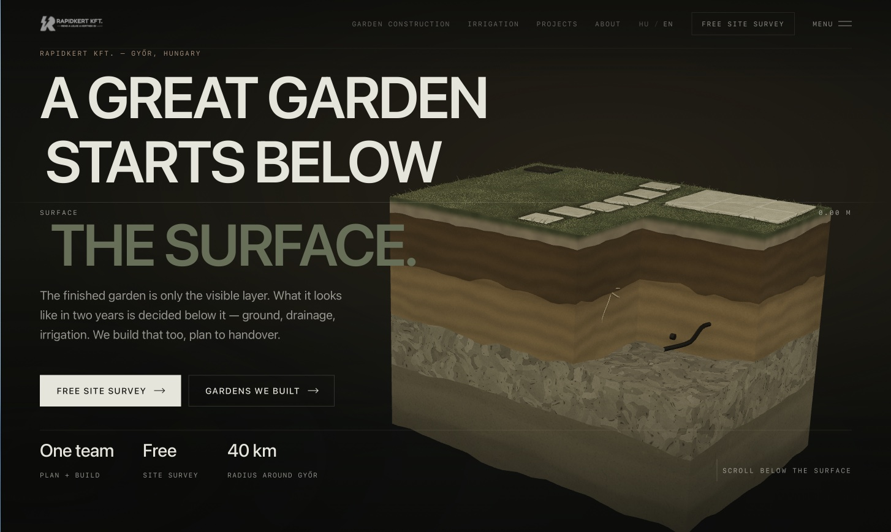

Geschäftlicher Effekt
~15 Mio. HUFBeauftragter Projektwert aus der Suche
~9 Mio. HUFGoogle Ads
~6 Mio. HUFOrganische Suche
Zwei Kanäle, ein System.
Bezahlte und organische Suche wurden für Rapidkert zu messbaren Akquisekanälen: Zusammen brachten sie einen beauftragten Projektwert von rund 15 Millionen HUF.
Die beiden Zahlen stehen getrennt, weil sie getrennt entstanden sind. Hinter dem organischen Ergebnis von 6 Mio. HUF steht kein Werbebudget, deshalb teilen wir die 15 Mio. HUF nicht durch die Media-Ausgaben — die Verhältniszahl bezieht sich allein auf die 9 Mio. HUF aus Google Ads.
Google Ads Leistung
Wir haben die Nachfrage dort abgeholt, wo sie entsteht
Fünf Monate in einem einzigen Konto, mit auf Gartenbau und Bewässerungstechnik eingegrenzter Suchintention.
31.500+ImpressionenGoogle Ads · 01.12.2025—30.04.2026
1.290+KlicksGoogle Ads · 01.12.2025—30.04.2026
4,1 %Klickrate (CTR)Google Ads · 01.12.2025—30.04.2026
156 HUFDurchschnittlicher KlickpreisGoogle Ads · 01.12.2025—30.04.2026
~201 Tsd. HUFWerbeausgabenGoogle Ads · 01.12.2025—30.04.2026
~9 Mio. HUFBeauftragter ProjektwertVom Kunden bestätigt
44,8×Beauftragter Projektwert / Google Ads Ausgaben
Rund 201 Tausend HUF Media-Ausgaben trugen zu etwa 9 Millionen HUF an beauftragten Projekten bei. Jeder für Google Ads ausgegebene HUF entsprach rund 44,8 HUF beauftragtem Projektwert.
Das ist eine Verhältniszahl, kein Gewinn und keine Nettorendite: Der beauftragte Projektwert enthält auch die Kosten der Ausführung.
Organische Suche
Suche, die sich verzinst.
Bezahlte Suche fängt die unmittelbare Nachfrage ab — sie bringt Anfragen, solange sie läuft. Parallel dazu hat organische Sichtbarkeit eine zweite Akquiseebene aufgebaut, und die kostet keinen Klickpreis.
SEO und organischer Google-Traffic brachten weitere beauftragte Projekte im Wert von rund 6 Millionen HUF.
~6 Mio. HUFProjektwert aus organischer SucheVom Kunden bestätigt
0 HUFWerbeausgaben dahinterGoogle Ads · 01.12.2025—30.04.2026
Die digitale Neuerfindung
Die Performance hat die Anfragen gebracht. Das Design bringt die Position.
Als das Akquisesystem seinen Wert bewiesen hatte, änderte sich die Frage. Es ging nicht mehr darum, dass Rapidkert mit anderen Gartenbau-Websites mithält.
Sondern darum, neu zu definieren, wie sich die Website eines Gartenbauers anfühlen kann.
Unter der Oberfläche
Ein großartiger Garten beginnt unter der Oberfläche.
Die meisten Gartenbau-Websites zeigen dasselbe: fertigen Rasen, Pflanzen, Terrassen, fertige Gärten. Alles nur das, was sichtbar ist.
Die Qualität eines Gartens entscheidet sich jedoch nicht an der Oberfläche. Bodenvorbereitung, Entwässerung, Bewässerung, unterirdische Technik, statische Vorbereitung — sie entscheiden, wie der Garten in zwei Jahren aussieht. Der Kunde sieht davon nichts.
Das wurde zur visuellen und inhaltlichen Grundidee der Website: Wir haben das unsichtbare Können von Rapidkert zur zentralen Bildidee gemacht.
Statt einer weiteren Galerie fertiger Gärten haben wir ein Erlebnis gebaut, das zeigt, warum diese Gärten Bestand haben.
Interaktives 3D-Erlebnis

Die Oberfläche ist nur die letzte Schicht
Im Zentrum des Startbildschirms steht kein Foto, sondern ein räumlicher Gartenquerschnitt. Das 3D ist hier keine Dekoration, sondern das Mittel der Argumentation.
- Räumlicher Querschnitt
- Gegenstand des Startbildschirms ist ein herausgeschnittener Bodenblock: oben die fertige Gartenfläche mit Rasen und Gehwegplatten, darunter die Schichten.
- Unterirdische Schichten
- Mutterboden, verdichteter Unterboden und Kiesbett übereinander, sichtbar getrennt — genau die Struktur, die der fertige Garten verdeckt.
- Bewässerung und Entwässerung
- Im Querschnitt verlaufen die Leitung des Sprinklers und das Drainagerohr — in genau der Tiefe, in der sie auch in Wirklichkeit liegen.
- Tiefenanzeige
- Am rechten Rand steht eine Tiefenanzeige in Metern, die an der Oberfläche null zeigt: Die Seite spricht über Tiefe in ihrer eigenen Maßeinheit.
- Nach unten scrollen, nicht nach vorn
- Die Seite beginnt mit der Aufforderung „Scrolle unter die Oberfläche“: Die Scrollrichtung ist die Geschichte.
- Typografie und Farbpalette
- Eine große, kompakte Grotesk für die Überschrift, technische Beschriftungen in Monospace und eine zurückhaltende natürliche Palette — Tiefgrün, Erd- und Sandtöne, warmes Creme.
- Zweisprachige Oberfläche
- Ungarische und englische Fassung, über den Header umschaltbar.
Alles oben Beschriebene lässt sich auf dem veröffentlichten Startbildschirm von rapidkert.com überprüfen.
Ergebnis
~201 Tsd. HUF → ~9 Mio. HUFGoogle Ads
+ ~6 Mio. HUFOrganische Suche
= ~15 Mio. HUFBeauftragter Projektwert
Ein Akquisesystem. Eine vollständig neu gedachte digitale Präsenz.
Die Website von Rapidkert ist nach demselben Prinzip gebaut, nach dem Rapidkert arbeitet: Was unter der Oberfläche passiert, entscheidet alles darüber.
Die Zahlen stammen aus dem Google Ads Konto von Rapidkert für den Zeitraum 01.12.2025 bis 30.04.2026 sowie aus dem vom Kunden bestätigten beauftragten Projektwert. Beauftragter Projektwert ist weder Umsatz noch Gewinn.
Von unter der Oberfläche über die Kategorie hinaus.
Wie geht es weiter
Wenn du eine ähnliche Aufgabe hast, sind das die nächsten Schritte.